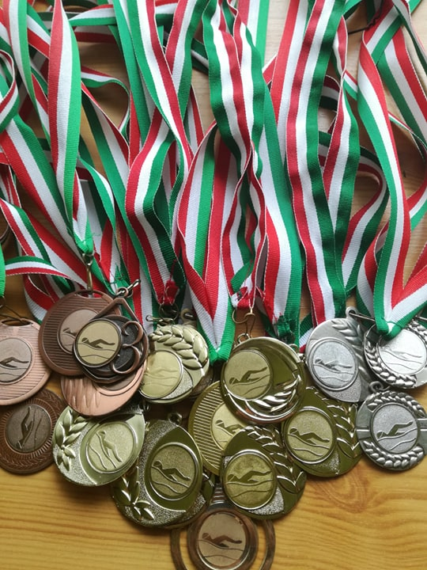
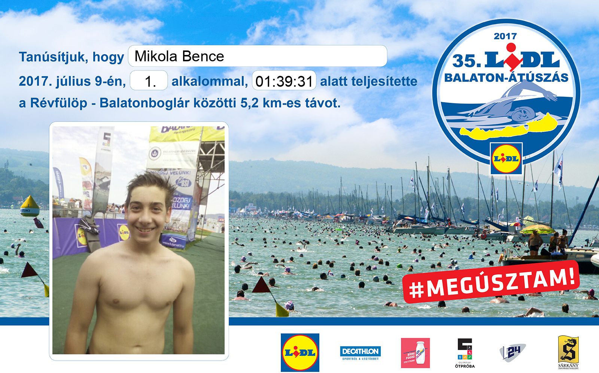
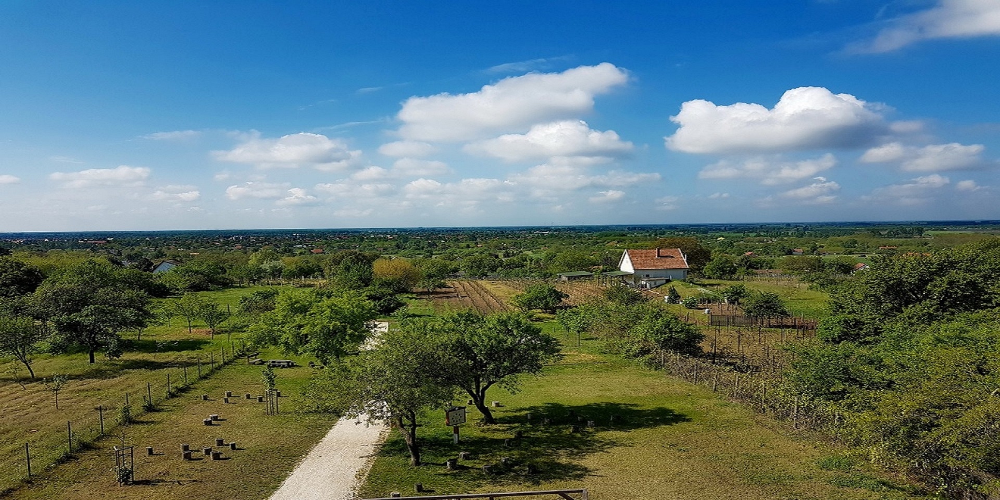

Sport
 Sportolni mindig is szerettem és vesreny szerűen is sportoltam. Az úszást választottam még kicsiként és azt az ágat vittem tovább Az úszást 5 évesen kezdtem majd 7 évesen versenyszerűen folytattam.Egész jól ment sokat edzetem heti 5 ször két órában. Az évek alatt rengeteg versenyen voltam volt 2. 3. néha 1. helyezést is elértem de minden versenyenen javítottam az időmön.

A balaton átúszáson is voltam eddig 2 alkalommal amit sikerült átusznom megállás nélkül 1óra és 39 perc alatt.Az idő alatt míg úsztam én minden percét élveztem.
Az úszás közben 20 méterenként hajók voltak ha elfáradna az ember kimászhat és ehet egy kis szőlőcukrot és ihat vizet.Fél kilóméterenként bólyák voltak ,hogy tudjuk hol járunk.
Erre az eseményre egy hónappal kezdek el készülni. Egyre nagyobb távokat úszók egyszerre ,hogy szokjam a hosszú távot.
Egyéb Sport
Sok féle sportot szeretek (csak néha túl lusta vagyok) de az úszás mellet még a biciklizést és a futást szeretem csinálni a legjobban. Bicikizni általában a város körül vagy Monor mellet egy kicsi "hegyen"